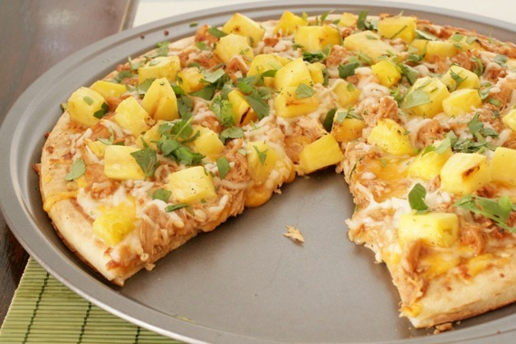

Chicken and Pineapple Pizza

Description
This recipe will show you how to make the most mediocre pizza you have every tried, but, yes, pineapple does belong on pizza
Ingredients
- 1 cup Whole Wheat Flour
- 2 cup All Purpose Flour
- 2 tsp Sugar
- 1 tbsp Olive Oil
- 1 packet Yeast
- Pinch of Salt
- Pizza Sauce (store bought or homeade)
- Mozzarella Cheese
- Pineapple (as much as you want...the more the better)
- Chicken (as much as you want)
Steps
- Combine 2 tablespoons of water (105-115 degF), 2 tsp of sugar and 1 packet of yeast to a bowl. Stir and let set for 10-15 minutes. You should notice the yeast begins to expand in the water.
- In a large mixing bowl, combine the whole wheat and all purpse flour and salt. Mix together.
- Once yeast has proofed, and liquid into the mixing bowl. Begin stirring ingredients together
- Once ingredients have been combined, dump the dough onto a clean surface for kneeding. Kneed the dough for about 10 minutes.
- Pour the olive oil into the bottom of the mixing bowl and place dough into mixing bowl. Let the dough rise for 2 hours
- Take the dough out of the mixing bowl for another short round of kneeding. Only kneed for 2-3 mintues
- Place dough back into mixing bowl and let the dough rise for another 1 hour.
- After 1 hour, preheat oven to 550 degrees and begin to form the dough into the shape of a pizza
- Place pizza dough on a sheet rack and your sauce, cheese, pineapple and chicken
- Cook pizza in oven for 15-20 minutes, or until the cheese begins to brown